AI 已经很会写代码，下一步该改的是整条研发流程：OK 平台的端到端实践
腾讯的作者用 OK 平台几个月的运营数据讲一件事：与其在旧流程的每一环插一个 AI 助手，不如从头问「这一环为什么存在」，把需求评审、方案、编码、审查、部署重新串成一条 AI 能自己跑完的链路。
公众号原文 精读版（加密，需密码）本页导读约 25 分钟

作者 danteyang。开头抛出问题：如果从需求评审、出技术方案，到编码、审查、部署都由 AI 自动完成，研发流程会变成什么样？文章依据 OK 平台上端到端自动交付的实际运营数据，讨论怎样用「零基思维」重建流程；作者的落点是，AI 改变的不只是写代码的速度，而是人和代码之间怎么分工。
先问每个环节为什么存在，再谈要不要 AI
CodeBuddy、Cursor、Claude code 这类工具写代码已经很强，日常开发基本够用。可为什么还不能把需求直接扔给 AI，仍要开发在旁边陪着？作者从 Human-in-the-Loop 的角度把 CI/CD 看成一个环，追问：人在每个环节到底在干什么，这些事能否不需要人，让需求从提出一路自己跑到交付？
用一个常见例子说明。用户反馈「帖子列表加载太慢，要优化」。原样交给 AI，它只能反问改哪里、怎么改，或者按自己的猜测动手，效果常常不理想，开发还得回滚。作者说这不怪 AI 笨，而是它缺背景：列表走哪个接口、下游是 MySQL 还是 ES、本月刚改过分页、慢查询其实指向一张没建索引的关联表。这些信息在人脑或文档里，AI 每次对话都像失忆一样从头来。
现实里人是怎么做的？先自己想清根因，把「加载慢」转述成「关联查询少了索引，还有 N+1 问题」再交给 AI。也就是人负责翻译和拍板，AI 负责执行，这样编码确实快了。
作者把问题再推一步：翻译和决策真的非人不可吗？要是这一步也交给 AI，需求能否自己端到端跑完？
人在每个研发阶段做什么
原文 · 人在研发链条上到底在做什么把流程按阶段拆开，「人还在做什么」一目了然，原文列成了一张表：
| 阶段 | AI 现在能做的 | 人还在做的 |
|---|---|---|
| 需求分析 | 整理需求文档 | 判断需求是否真实、优先级、和业务目标的对齐 |
| 方案设计 | 给架构建议、写设计文档 | 做 trade-off 判断：性能 vs 成本、速度 vs 稳定性 |
| 编码 | ✅ 核心能力，已经很强 | 代码审查、确保符合团队规范 |
| 测试 | 生成单测、集成测试 | 设计测试策略、判断边界 case 是否覆盖 |
| 部署 | 写 CI/CD 配置 | 判断什么时候该发、什么时候该回滚 |
| 线上运维 | 监控告警、日志分析 | 判断告警是否真实、影响范围 |
读表的规律：AI 长于「执行」，人长于「判断」。人的核心工作是在每个分岔口做决定，凭常识、经验和对系统的整体把握，往往不自觉；AI 没有这些，只能要么来问你（打断节奏），要么自己猜（容易错）。
表里还藏着更深一层的问题：人参与的那些「判断」里介入，有多少真的不可替代，又有多少只是因为信息没传到位？
断点在哪
原文 · 真正的断点在哪里一个功能需求从用户反馈到上线，通常要经过下面这条传递链：
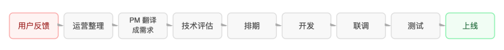
每转一次手，信息就丢一点：用户抱怨「操作太麻烦」，运营归纳成「简化流程」，PM 又写成「少点几下」，最后上线的东西未必是用户真想要的。为了抵消这种损耗，大家反复开会，评审需求、对齐接口、开联调周。作者认为这些环节都是在补人和人之间传话的损失，存在的原因是人有局限，不是问题本身需要。
如果 AI 拿得到全链路上下文，再以结构化代替口头转述，信息不再被层层「翻译」，这些摩擦就不是被优化掉，而是直接没了。
零基思维只追问一句：这个环节存在，是因为人做不到，还是因为问题真的需要？拿三个例子套：前后端专门开会对协议，协议何必由人来对；需求评审让 PM 和开发反复拉会，信息对齐何必靠开会；联调要等两边都做完再一起跑，这段等待属于节奏问题，并非技术问题。
这些环节要是都能让 AI 消掉，问题就不再是给每一环配个 AI 助手提效，那只是让旧流程跑得更快。真正要做的是重新设计流程本身：一旦 AI 能同时掌握前端和后端的上下文、一直理解需求意图、自己完成联调验证，前后端分离的壁垒、靠人对齐的传话链、等待联调的空档，这些过去理所当然的东西都成了多余的摩擦。一句话：毛病在流程结构，不在执行速度，这就是「重构」和「插件」的根本差别。
结论 · 重建，而不是嵌入
原文 · 结论：从零基思维出发，重建而非嵌入每次技术跃迁，都会让一批原本天经地义的流程变得荒唐：电话普及前，企业靠信使传令；有了电子邮件，一级级审批的纸质公文就成了笑谈。作者认为 AI 编程能力的爆发正以同样方式审视今天的研发协作：凡是因为「人做不到」才设计出来的流程，正一个接一个失去存在的理由。
传统流程里不少环节其实是在补人的短板：前后端分离，因为一个人难以同时精通两端；接口文档，因为沟通太贵，得有书面契约；需求评审会，因为传话链太长，理解偏差要靠人对齐；联调阶段，因为双方进度不同步，只能凑到一起跑。归根结底，它们存在是因为人做不到，而不是问题需要。
当 AI 能同时拿着前后端的完整上下文，需求从提出到开发的间隔缩到分钟级，作者的结论是：不是往旧流程里塞 AI 工具，而是让 AI 重新定义流程，从零基思维起步、端到端重建。
「需求即交付」：先看数据
OK 平台定位为端到端研发平台，由 AI 驱动，理念叫「需求即交付」：用户交上一段需求，后面的需求评审、仓库匹配、技术方案、编码、Code Review、部署，全由 AI Agent 一路做完。
真实数据
原文 · 真实数据下面是平台 2026 年 4 月下旬上线到 6 月的实际运营数据。
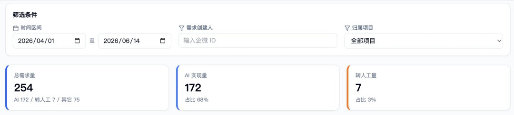
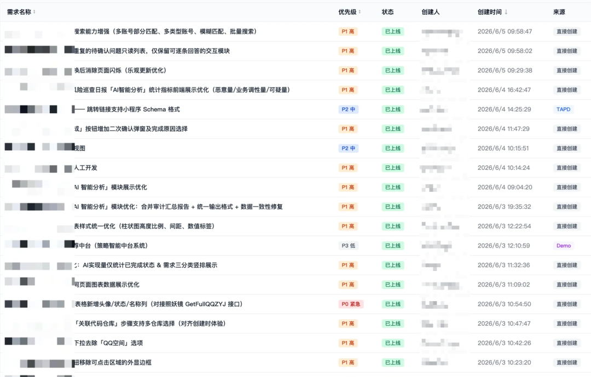
4 月至 6 月，安全中心项目空间一共提了 254 条需求，172 条（68%）由 AI 端到端做完；剩下的是策略类、数据类需求，或者超出端到端能力，转给人处理。
对比基线：传统做法下，一个简单需求从提出直到代码合入，中位数要 3~5 个工作日；在平台上，有 51% 的需求 2 小时内就完成。作者的解读：人手不变，团队能接的需求变多；常规需求由 AI 消化，人从重复开发里抽身，把精力放在转人工的那部分，也就是更复杂、风险更高、价值也更大的策略需求和架构决策。他强调这不是「AI 写了点代码」，而是「流程里多数环节都由 AI 完成」。
九阶段全链路
原文 · 九阶段全链路整个流程分九个阶段，每个阶段都规定了 AI 扮演什么角色、输入是什么、输出什么、要过什么质量门。
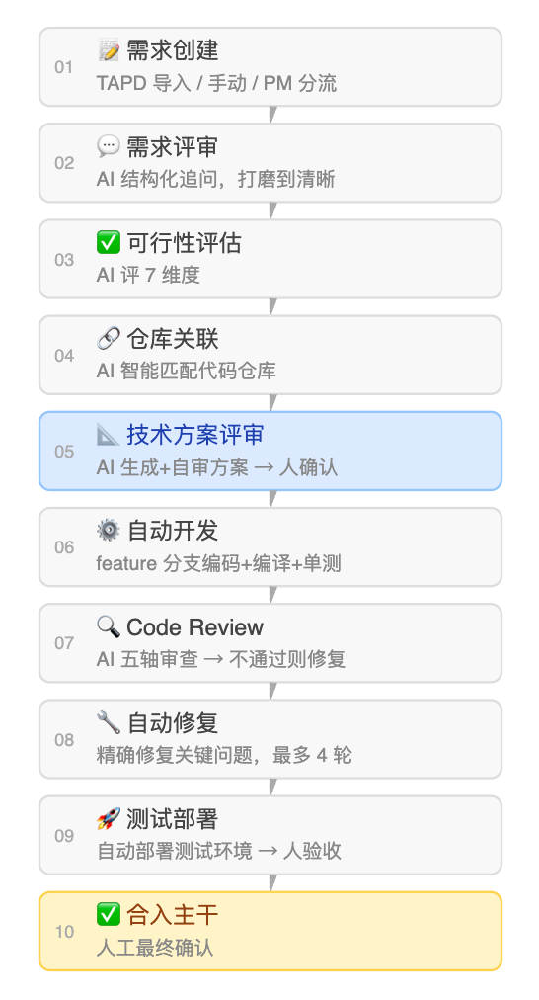
需求好坏决定交付成败
AI 开发最常见的失败是什么？作者的答案是需求含糊，导致大量返工。这和直觉相反，但运营数据一再证明：卡脖子的不是开发，而是需求。很多人会觉得 AI 写得这么快，怎么会卡在需求上？
规律是：需求写得越清楚，AI 做得越准；需求一含糊，代码写得再快也要返工。需求不过关，流水线就像在沙地上盖楼，跑得越快返工越贵。所以在 AI 端到端里，「怎么提需求」的分量被大大放大了。
但这不等于要提需求的人变成技术专家、把细节写全，那既不现实也不公平。真正要解决的是：需求不完整时，让 AI 主动追问、补齐背景，而不是埋头就干、到头来漏东西。
需求评审 AI 的工作方式
原文 · 需求评审 AI 怎么工作平台的需求评审 AI 不按清单查缺漏，而是像做访谈那样一层层深挖，分四步。一，先复述：提问前，AI 先拿自己的话把需求要点讲一遍，请提需求的人确认理解没跑偏；这一步最省力也最能纠偏，因为大量返工都是 AI 一开始就理解错、然后一路错到底。二，顺着回答往下挖：不套预设流程，而是从对方上一轮的回答里找新冒出来的含糊处，更像资深 PM 跟用户访谈。三，太模糊就先发散再收敛：连意图都判断不了时，列出 2~3 种可能的理解让用户挑选或补充，而不是直接打回。四，区分必须项和建议项：为谁做、做什么、验收标准、关键业务规则四样是放行门槛（必须明确）；优先级、异常场景等属于建议明确，补上更好但不强制。
给 PM 的需求收集池
原文 · PM 需求收集池：从想法到开发，一站式平台还给 PM 单独做了一条需求收集池，和端到端开发流水线分开。
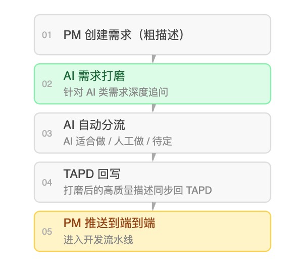
这样，PM 只要给一个粗糙的想法，剩下的由 AI 补到「可以开发」的程度。作者的意思是：把需求整理成 AI 能执行的规格，这件事本身 AI 就能做，不需要人去填每个细节。
可行性评估怎么过
原文 · 什么样的需求会通过可行性评估可行性评估 AI 按 7 个维度评分（0~100 分）：需求清晰度、仓库匹配度各占 20%，改动范围、技术复杂度各 15%，外部依赖、风险等级、交付形态各 10%；总分 ≥60 才进开发流水线。作者说它不是闯关游戏，而是一道保护：开发阶段注定要卡壳的需求，在上游就拦住。
好方案是施工图，不是提纲
改方向，在方案阶段最便宜，到开发阶段才发现就最贵。需求评审通过后进入技术方案。作者认为这一环对最终代码质量影响最大：好方案该是施工图，而不是提纲。
方案的四条硬纪律
原文 · 方案质量决定开发能不能一次通过技术方案 AI 生成方案时遵守几条硬规矩。其一：排顺序看依赖，不看重要性。步骤从底层往上走：先数据库表或存储模型，再协议和接口，再业务逻辑，最后是调用方或前端；先打地基后盖楼，后面的步骤不能依赖前面还没建出来的东西。道理像常识，但不少 AI 生成的方案按重要程度从高到低排，于是开发 AI 执行时常常撞上「第 2 步要用第 5 步才会创建的东西」。
其二：优先垂直切片。沿一条完整功能路径切分，一张表、一个接口、一段最小可用逻辑合起来就是一片可验证的切片；不要先把表全建完、再把接口全写完。每切完一片，系统都要能编译、能验证，开发 AI 每走一步就能检验，不必等到最后才跑通。
其三：控制任务粒度。某一步如果预计改动超过 5 个文件，或者跨越 2 个以上独立子系统，就必须拆细；步骤标题里要是出现「并且」「同时」，多半其实是两步。
其四：插检查点。每 2~3 个步骤就写明一个验证点，例如「这里应能 go build 通过」「这里接口该能跑通基本 CRUD」，给开发 AI 明确的阶段性锚点，不会闷头做到最后才发现早期就错了。
给自己的方案找茬
原文 · 对自己的方案做一次找茬遇到关键决策，比如跨模块修改、编译器验证不了的性质（并发安全、幂等、不变量）、不可逆的改动，技术方案 AI 会在确认前先给自己挑刺：假设作者过于自信，方案最可能错在哪里？是否藏着没说出口的假设、漏掉的边界？好处是趁改方向还便宜时就把问题解决；要是等开发完、到审查才发现，修起来贵好几倍。
待确认问题提前摆出来
原文 · 待确认的问题提前暴露方案里拿不准、要人拍板的点，统一收进「待确认问题」，分产品和技术两类列出；用户在管理端逐题作答（有选择题也有开放题），系统收齐答案后进入下一轮评审。作者把这称为整条链路上质量最关键的原则：不确定的事提前摆出来，不让模糊混进开发。
像手术刀一样只改该改的
AI 写代码最大的坑，是写得出来，却写错或写过头。方案对，代码未必对，两者之间有很多细节会出错。用户确认方案后，开发 AI 就在 feature 分支上开写；编译、单测通过并创建好 MR，一次开发才算完成。运营几个月，团队总结出三条硬纪律。
纪律一 · 简单优先
原文 · 纪律一：简单优先，抵抗过度设计AI 跟人一样爱把事情搞复杂，写代码时尤甚：只用一次的操作，它要搭一套「通用框架」；三行逻辑，它要抽象成「可扩展的策略模式」。为此开发阶段明确注入了「简单优先」：最先写出最简单、一看就对的版本；写完再问还能不能少几行、这层抽象值不值；三行重复胜过一个过早的抽象；只满足眼前需求，不替想象中的未来过度设计。
这条原则直接影响审查通过率：有了「简单优先」的约束，审查发现的问题里架构过度复杂一类问题的出现次数降了约一半。
纪律二 · 只碰该碰的
原文 · 纪律二：范围纪律，只碰该碰的方案列出了要改哪些文件，开发 AI 必须且只能改这些。纸面上理所当然，实际上 AI 很爱「顺手清理」旁边的代码：命名不规范顺手改、函数能优化顺手重构。每次顺手都是潜在 bug，也是审查噪音。于是加了「发现但不碰」机制：开发中看到范围外值得改的地方，写进变更摘要里名为「发现但不碰」的一栏，而不是自己动手；既保住了发现的价值，又避免顺手改出问题。
纪律三 · 关键路径测试先行
原文 · 纪律三：关键路径先写测试，再实现不是所有代码都得测试先行，但核心业务逻辑必须如此：新加的判断分支、关键的计算、状态的流转、幂等处理，开发 AI 都要先写一个会失败的测试，再去实现到它通过。目的不在覆盖率数字，而是把验收标准落成测试；测试一过，结论是「确实对」，而非「好像对」。
实际上，AI 的代码要通过 go build 并不难，跑单测时才偶尔露出真实的逻辑漏洞。在自动开发阶段，有约 49 条（约 17%）需求经历了超过 1 轮「审查 + 修复」，其中相当一部分正是「能编译、单测挂了」，问题在早期就暴露出来，省掉了进入审查后更大的返工。
不求完美求改善，安全一票否决
审查对象换成了 AI 写的代码，标准要不要跟着换？人工审查的老毛病是求完美，而不是求改善。Reviewer 个个有风格偏好；面对 AI 代码，这个毛病更明显，很多「建议修改」只是风格不同，并非真问题。审得过严的直接代价就是白白返工：修一轮、再审一轮，全是时间成本。
改善即批准
原文 · 改善即批准的判断标准平台的代码审查 AI 守一条标准：只要一次变更确实让整体代码健康度变好，就该放行，哪怕不完美；完美代码不存在，目标是不断改进，不能因为「换我不会这么写」就卡住变更。
问题只分两档。关键问题 = 阻塞性，必须修：会引出 bug 或崩溃、安全漏洞、损坏数据、缺功能、越权的，只有这类才会得到「建议修改后合入」的结论。改进建议 = 非阻塞，建议优化：像命名、注释、风格，以及可做可不做的性能优化；如果只有这一档，verdict 一律给「通过」。
这算不算对质量妥协？作者说不是：在很多场景下，90 分的代码今天上线，好过为了 95 分多改两轮、拖到明天才上线。
安全是硬底线
原文 · 安全审查是硬底线「改善即批准」之外，安全没得商量。审查 AI 强制核对六项：针对用户的操作，UID/UIN 要从登录态取，不能信入参（防越权）；新接口要正确接上鉴权中间件；SQL 要参数化，不能拼字符串；代码和日志里不能硬编码敏感信息；外部入参要在协议边界校验；访问资源要校验归属，防止看到别人的数据。这些不是建议，命中任何一项就算关键问题，修完才能合入。
前面四章讲的是 AI 如何做好需求、方案、编码、审查：评审打磨需求，方案做对抗自审，编码守三条纪律，审查坚持改善即批准。接着自然要问：这四件事都交给 AI 了，人还干什么？
人由执行者升级为决策者、知识提供者
常见误解是：AI 端到端了，人就没事干了。作者说恰恰相反，人的角色没有消失，而是升级：由执行者升级为决策者、知识的提供者。
四个离不开人的节点
原文 · 人不可替代的四个节点决策与方案选型。有多条技术路线时由人权衡取舍。AI 能把选项和利弊摆出来，可「系统更要可维护性还是性能」「这个场景值不值得上缓存」这种判断要人来定。
补上隐性上下文。架构背景、历史包袱、团队约定、业务边界，常常只在人脑里，没写进任何文档。作者认为上下文质量决定输出质量是 AI 研发最核心的规律，给足背景比反复调 Prompt 更管用。
识别异常并干预。AI 走偏时，要靠人看出来、扳回来。一个真实例子：舆情管理端要拆分标签，需求写得够清楚，AI 也顺利改好了前端展示和后端接口的存储，却没想到还有一个相关的巡检 Skill 也得一起改，不改就会产生入库 Bug。作者说这不是能力不够，而是 AI 缺全局视野，不知道系统里有这层关联；这类问题需要人在审查时发现并补上。
最终的价值判断。对用户有没有价值、合不合产品方向，属于人的判断；AI 可以高效实现，但「该做什么」不该交给它。
Review 从逐行到看意图
原文 · 代码 Review 从行级向意图级升级语法、格式、命名这些检查交给 AI 后，人的 Review 也变了质：不再纠结变量名好不好，而是看这次改动有没有把需求意图准确落实；不再一行行读，而是重点看跨模块交互对不对、边界条件处理没、安全影响面评估没。粒度从「行」升到「意图」。作者认为这才是有价值的 Review，也是人的判断力替代不了的部分。
让平台越用越聪明
端到端研发有个传统模式没有的长处：交付会留下积累，积累又会让后面的交付变好。飞轮也有风险：如果没有老化和退场机制，它会转成垃圾循环，过期的知识把上下文弄脏，危害比没有知识还大。
为什么上下文决定输出
原文 · 为什么上下文质量决定输出质量AI 和人不同：它没有经历过 100 次项目，也不记得在这个仓库里踩过哪些坑。如果给它的总是「一张白纸加需求描述」，它就得每次从零理解系统，就会重复犯错、漏掉同样的边界。知识飞轮要做的，就是把团队过去攒下的知识有结构地注入 AI 的工作上下文。
四步飞轮
原文 · 四步飞轮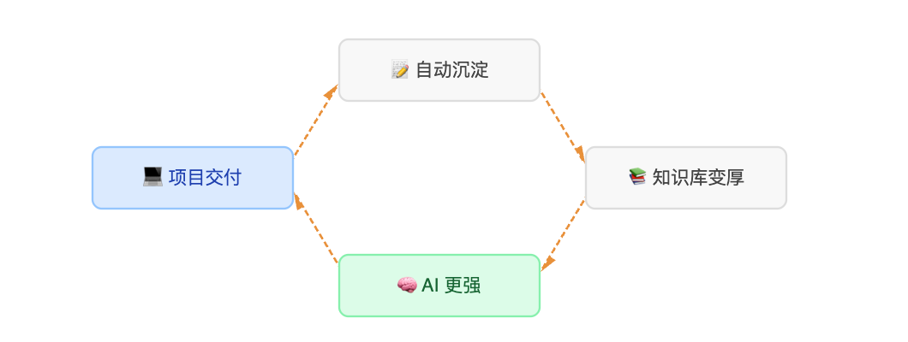
一句话：交付带来积累，积累又让下次交付更好。平台目前的知识资产分布如下表：
| 类型 | 数量 |
|---|---|
| 技术方案模板 | 223 条 |
| 经验复盘 | 111 条 |
| 踩坑记录 | 112 条 |
| PRD 模板 | 101 条 |
| 合计 | 547 条 |
合计 547 条：技术方案模板 223 条最多，其后是踩坑记录 112 条、经验复盘 111 条、PRD 模板 101 条。最近 7 天又新增 200+ 条；作者用来衡量的指标叫「沉淀飞轮价值」，算法是资产 × 复用 × 时效，一直在涨。
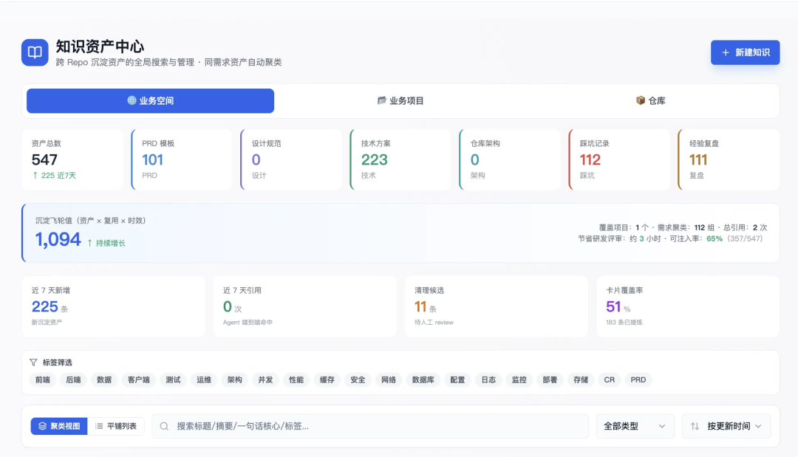
前置强注入，而不是等 AI 自己查
原文 · 前置强注入 vs 被动召回早期的做法是 AI 需要时自己去查，查不查、查什么由它决定。毛病很明显：AI 意识不到自己缺什么，想不起来「这会儿该查查以前踩过的坑」。如今改为平台在调用 AI 之前强行注入：依据需求类型、所在仓库和关键词，挑出最相关的知识打成包，直接放进 AI 的入参；AI 不必知道该去查，需要的知识已经摆在面前。
效果是知识注入率（本次注入的相关知识条数 ÷ 可注入的相关知识总条数）从「由 Agent 自己决定」的不稳定状态，提高到超过 90% 的确定覆盖。
知识蒸馏
原文 · 知识蒸馏：踩过的坑不再踩第二次每个需求做完，平台会叫知识蒸馏 AI 把这次交付里的四类产物分别存起来：代码审查挑出的问题，存成这个仓库的踩坑记录；通过了的技术方案骨架，存成方案模板；需求评审的一问一答，存成 PRD 模板；整个端到端过程，存成经验复盘。
蒸馏 AI 有条硬原则：只留跨需求能复用的结论，一次性的业务细节一律丢掉。每条知识带一个 0~1 的置信度，分高的直接入库，分低的交人工审核。
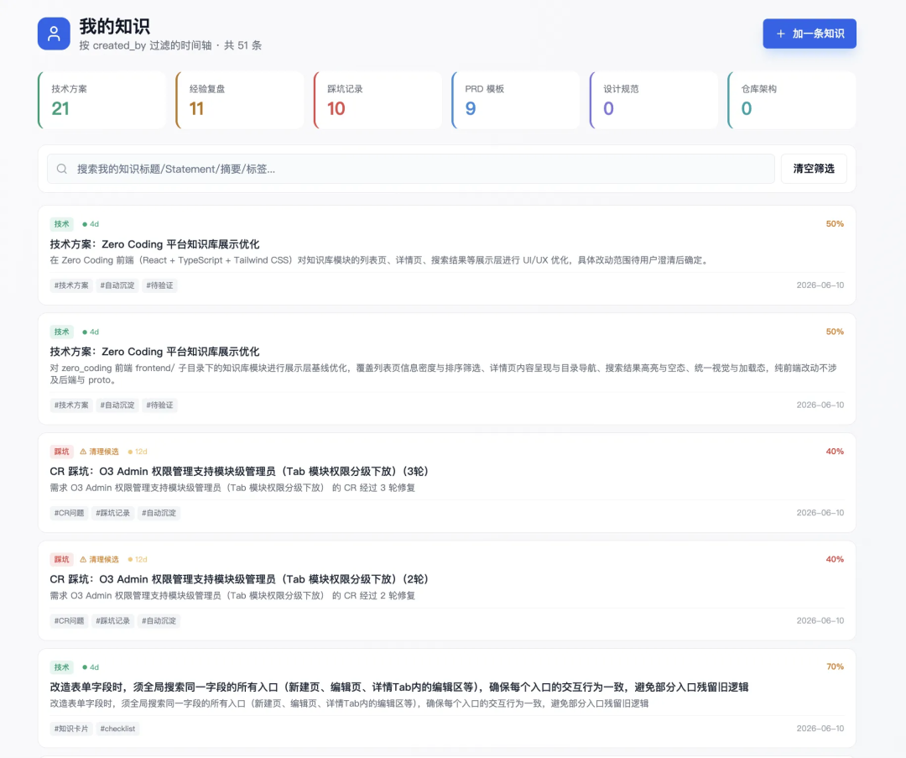
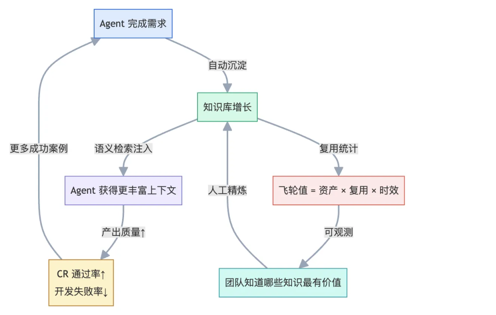
知识会过期
原文 · 知识老化与退场知识库最大的隐患，是过期知识混进 AI 上下文：代码在改、架构在变，一年前对的做法今天未必还对。平台设了三道防线。TTL（有效期）：知识条目各有期限，到期进入待复核队列，没人复核就调低可信度。Agent 回传反馈：AI 工作时若发现注入的知识和实际代码、架构对不上，就在输出里填 knowledge_feedback 字段，平台随之下调这条知识的置信度，或交给人复核。仓库知识跟代码同步刷新：主干一有新 commit 合入，负责分析仓库架构的 AI 就做增量更新，改写架构描述文档。这样知识库不只是在变大，也在变准。
哪些需求能端到端，哪些还不行
作者提醒：端到端的 AI 研发并非万能，看清能力边界，比夸大能力更要紧。
四象限
原文 · 四象限能力分布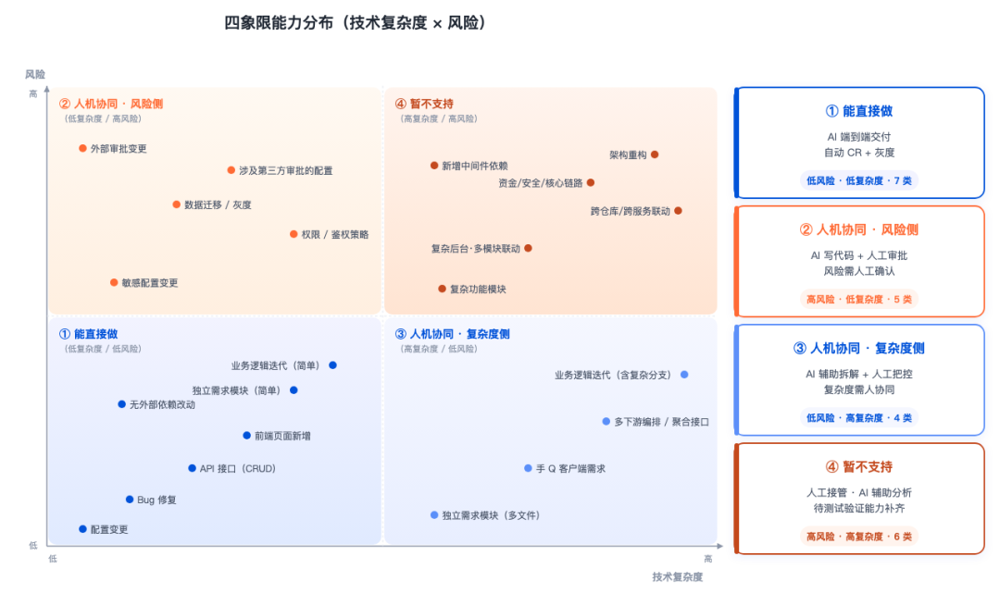
①号象限，直接做：AI 100% 端到端，人只做最后验收。这是平台眼下的主力类型，完成的需求里绝大多数属于这里，比如修 Bug、增改前端页面、标准 CRUD 接口、简单业务逻辑的迭代。
②号象限，风险侧的人机协同：编码约六到八成（60~80%）由 AI 写，人管风险评审、推动审批；典型是要 DBA 点头的简单 DDL 变更：代码和 MR 由 AI 出，审批由人去跑。③号象限，复杂度侧的人机协同：AI 写 50~70% 的代码，架构怎么定、模块怎么拆由人先决定；典型是改动横跨多个文件的完整功能模块，人拆好后 AI 照方案一个文件一个文件地实现。
④号象限，暂不支持：目前不走端到端，AI 只帮着分析；凡涉及资金流、核心安全链路或跨仓库复杂联动的需求，目前仍要人全程主导。
支持与不支持清单
原文 · 当前支持与不支持的清单现在能直接做的：RESTful / RPC 接口的增删改查；在已有架构上加或改业务逻辑；配置项变更（加配置、改默认值等）；已明确定位的 Bug 修复；纯前端 UI / 交互改动；单仓库内闭环的改动。
现在还不做的六类：需要同时动多个独立仓库或服务的联动；目录调整、分层改变这种大规模重构；要接新中间件（如 Kafka、ES、新的 Redis 集群）；数据库 Schema 的重大改动（建表、大批量改字段这类须 DBA 审批的）；碰到资金、支付或核心安全链路的改动；交付要做数据迁移或灰度发布的。
边界会变：接入的仓库更多、AI 能力升级、平台加了新的自动化环节（比如自动申请外部资源），范围就会扩大。这份清单每月回顾校准一次。
从个人加速到乘数效应
作者说本章是他最想谈的，也是 OK 平台和多数 AI 研效实践最大的不同。
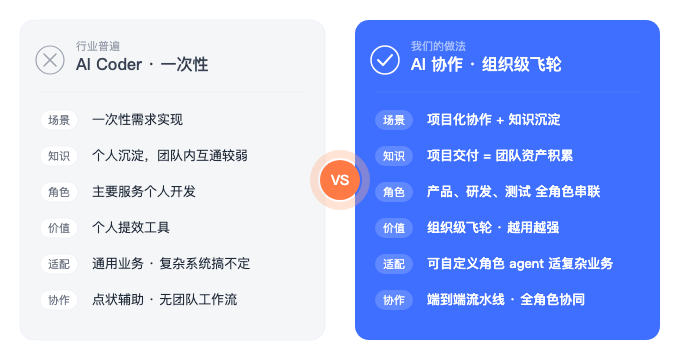
个人提效和组织提效差在哪
原文 · 个人提效 vs 组织提效——本质区别在哪？大部分 AI 工具提升的都是个人效率：写代码快了、查资料快了、出文档快了，这是加法，每个环节各省一点。组织提效不是加法，而是消掉环节之间的等待、沟通和返工，这是乘数效应。
按传统流程，开发要等产品澄清需求，测试等开发做完联调。据作者调研多个团队得到的反馈，角色之间的等待常常占到交付周期的 40~60%，把每个人的编码速度提高 50% 也解决不了。如果在产品提出需求和研发动手之间，AI 已经把需求评审、方案、可行性评估都做完，等待就直接没了。作者认为这就是端到端的提效倍数远超单点工具叠加的原因。
用 Spec 代替口头传话
原文 · 用 Spec 替代口头传递第一章讲过传话会让信息衰减。端到端给出的办法是拿结构化的 Spec（即规格说明）顶替口口相传。评审 AI 产出的需求描述精炼而完整，功能点、业务规则、验收标准都在，它不是给人读的摘要，而是后续每个 AI 的精确输入。所有 AI 都以同一份 Spec 为准，信息不再被转述和衰减，也不需要有人在各环节之间当翻译。过去要开会才能对齐的东西，如今是流水线上流转的结构化数据；等待并非被缩短，而是根本没有了。
质量门禁前移
原文 · 质量门禁前置：把问题消灭在产生时传统模式下很多问题到最后才冒出来：审查时才发现需求理解错了，测试时才发现接口设计有歧义，上线后才发现漏了关联系统。端到端把发现点往前挪：需求不清，评审 AI 在开发前问清楚；方案有盲区，方案 AI 在开发前对抗自审；代码有问题，审查 AI 在合并前把关；历史上踩过的坑，知识库在开发前注入。
越早发现，修得越便宜。作者引了 TAB 实验平台团队对外分享的数据：需求阶段加上 AI 质量检查以后，周期由 5 天降到 2 天（↓60%），还额外找出 30% 的遗漏影响点；这些若等开发完才发现，代价是现在的好几倍。
协作单位：从部门变成环节
原文 · 从部门协作到流程协作传统组织按职能分部门：产品、设计、研发、测试，一个需求要跨部门多次移交，每次都有等待和沟通。AI 端到端把协作单位从「部门」降到「环节」：不再是产品写完 PRD 扔给研发，而是 AI 评审通过就进入技术方案；不再是研发写完扔给测试联调，而是 AI 开发加自测完成就自动触发审查；各环节等待的是质量门放行，而不是哪个部门干完。流程能自动接力，部门之间的摩擦也就没了。
组织知识沉淀
原文 · 组织知识沉淀：打破「人走知识没」的魔咒传统团队的老难题：人走了，知识跟着走。一位资深同学离开，带走的除了技能，还有大量没写下来的东西：当初为什么这么设计、某个模块背着什么历史包袱、这类需求过去在哪里栽过跟头。OK 平台的知识飞轮在每次交付当中，把这类隐性知识显式地、有结构地存下来，知识不再锁在某人脑中，而是放在知识库里，任何 AI 都能取用，包括给新人提供帮助的那些 AI。
这带来三点好处：新人在平台上接第一个需求时，就能直接用上团队几个月积累的知识；资深同学即使离开，他参与写下的踩坑记录、做过的技术决策还保存在库里；时间越长，平台对这个团队的系统和业务了解越深，AI 的产出也越来越好。
85% 的团队还停在个人编码加速
做了这么多实践，作者把它放进更大的坐标系看：整个行业在哪，我们在哪，差距在哪？为此对公司内部的 AI 研效项目系统地调研了一轮，结果如下。
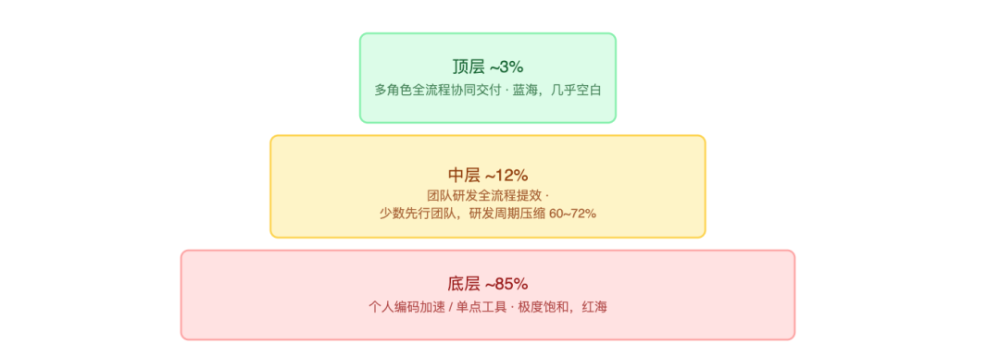
约 85% 的团队还停在个人写代码提速这一层。
底层 · 个人编码加速
原文 · 底层：个人编码加速——红海，且有结构性缺陷CodeBuddy、Copilot、Cursor 已把个人编码加速做到极致，赛道是红海。更深的问题是写得快，改得也多：它只解决了编码这一环，需求理解偏差、影响范围遗漏、角色间等待都还在，而且因为编码变快暴露得更快；AI 写代码快了，需求返工的成本可能比以前还高。
中层 · 团队全流程提效
原文 · 中层：团队全流程提效——微蓝海，但仍由开发者驱动也有少数团队把 AI 用到了需求理解、开发、审查整条链上，成绩亮眼：研发周期缩短 60~72%，理解需求的效率提高约 80%。可它们有一个共同短板：链路从研发接到需求才开始，到代码合进去就结束；需求本身质量如何、测试按什么标准验收，仍得靠人在团队之间来回协调。
顶层 · 多角色全流程协同
原文 · 顶层：多角色全流程协同——蓝海，几乎空白司内几乎没有团队真正用 AI 把产品、研发、测试串成一站式交付。某次 AI Meetup 的闭门讨论上，管理层达成的共识是：Agent 做单个任务很在行，可一到跨职能协作，信息仍然各自孤立。作者说 OK 平台要争的正是金字塔顶上这 3%。眼下已经能把「一句话需求」自动推进到「代码合并、部署到测试环境」，低复杂度且低风险的需求可端到端交付；让多角色协同、产品与测试深度接入，还在推进。
这次调研更大的意义在指方向：个人编码加速已经饱和，真正的价值在于能不能打通角色之间的信息墙，让 AI 驱动整条链路，而不只是某个节点。
组织形态会跟着变吗
作者先声明这是开放问题，没有确定答案，但有些变化正在发生，值得认真想。
已经在变的事
原文 · 正在发生的变化Review 的角色在升维。AI 写代码之后，人的 Review 从挑错变成确认意图；在这种模式下，一个懂业务的人比只懂语法的人有价值得多。
全栈化加速。AI 同时掌握前后端上下文，「全栈」不再要求精通两端，而是人主导业务、AI 补齐技术边界。
「特性团队」更可行。AI 接下大量执行工作后，2~3 人的小团队就能覆盖从需求、设计、开发、测试到上线的整条链路。
未来可能怎样
原文 · 未来可能发生什么以下是作者依据现有数据和观察给出的趋势判断。① 提需求的人和交付物之间的距离会大幅缩短：在工具类需求上，「小需求一提出就差不多解决了」已接近现实；研发效能会越来越取决于产品侧做决定有多快、描述得有多好。
② 「协调」类岗位的价值要重新定义：中间层协调工作被 AI 大量接手后，这些人要做更高阶的事，比如知识沉淀、监督 AI 质量、判断边界 case、业务策略。
③ 人效会上升，但人不会变少，产出会变多：交付更快带来更多迭代，迭代更快又带来更多需求；作者认为历史上每次技术革命在历史上最终都抬高了高产出，而不只是减少投入。
④ 「吃自己的狗粮」加速演进：工程师用 AI 平台给 AI 平台开发新功能，反馈回路极短；OK 平台自己的很多迭代就是在 OK 平台上做的。
流程只是手段，交付才是目的
端到端也好、零基思维也好，落点相同：流程只是工具，把问题解决掉才是目标，别把流程本身当成追求。某个环节被 AI 变成多余，就该拿掉；执行层的活 AI 能接，人就该去做判断和创造。
回看运营至今的数据：端到端自动交付了 170 条需求，实现率 66%，有 51% 的需求 2 小时内就完成，知识资产攒到 491 条，数字还在增长。（注意：这里的 170 条 / 66% / 491 条和第二、八章的 172 条 / 68% / 547 条不一致，原文没有说明口径差异。）
作者看重的不只是数字，而是角色的变化：人从写代码的执行者，变成提方向的决策者、积累知识的供给者。这不只是提效，而是在重新定义研发工作创造价值的方式。
最后一句：在 AI 已经足够强的今天，从零基思维起步，端到端重建。